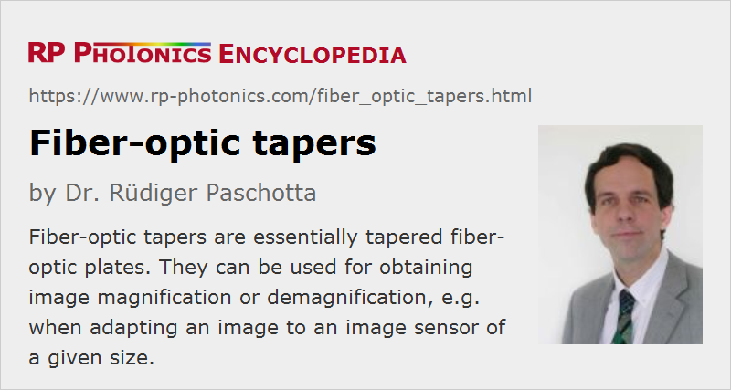

Fiber-optic Tapers
Definition: fiber-optic plates which are tapered for obtaining some image magnification
German: Faseroptische Konen
Category: fiber optics and waveguides
How to cite the article; suggest additional literature
Author: Dr. Rüdiger Paschotta
An ordinary fiber-optic plate (faceplate) provides an image transfer with no magnification. However, it is possible to taper a plate such that one obtains a variation of diameter and correspondingly of the fiber spacing. Such a fiber-optic taper provides some magnification or demagnification of images, depending on which side is used as the input side. As the numerical aperture of the used fibers is usually rather large, it is no problem to realize a substantial taper ratio over a short length.
Most fiber tapers preserve the shape of the area – for example, they are of the type round to round or square to square with a preserved aspect ratio. However, there are also other fiber tapers, e.g. converting from round to square or round to rectangle, or for changing the aspect ratio (anamorphic tapers).
Fiber-optic tapers are normally made for use with visible or sometimes also for near-infrared light.
Note that single fibers can also be tapered; see the article on tapered fibers.
Fabrication of Fiber-optic Tapers
The tapering is usually accomplished such that the ends of a relatively long fiber-optic boule are clamped and slowly pulled apart while the middle section is heated in an electric ring furnace, so that it gets soft. This leads to a reduction of the diameter in the middle region, while the clamped ends keep the original diameter. The resulting device can then be cut in the middle to obtain two fiber-optic tapers. The taper ratio can be adjusted in a relatively wide range.
Care must be taken in the fabrication to avoid image distortions. Plates with a rectangular cross-section are difficult to taper; there may be some deformation of the shape, which leads to such distortions e.g. of pincushion type. The effect of gravity can also be disturbing. Taper processes need to be optimized for minimizing such detrimental effects. For example, the temperature should be fairly uniform in the tapered region.
The tapering process is made somewhat easier to control when using plates made from a special taper glass, which has a reduced temperature dependence of the viscosity.
It is also possible to twist the device during the tapering process in order to obtain some amount of image rotation.
Reduced Numerical Aperture
Note that the numerical aperture of the taper is effectively reduced, since the angular distribution of the guided light increases in the region where the core diameter decreases. The NA reduction is given by the ratio of diameters of the two ends, assuming that there is no part with smaller diameter in between. When launching light with the full (original) numerical aperture of the input part, one will lose some of the light in the taper, or (if no extra-mural absorbers are contained in the device) that light is diffused over some area. For large taper ratios, such effects can substantially decrease the light transmission or alternatively degrade the image quality.
Reducing Fresnel Reflection Losses
Due to the typically quite high refractive index of the core glass (e.g. around 1.8), Fresnel reflections at the surfaces are quite strong: of the order of 8% per surface, compared with roughly 3.5% for ordinary silica fibers. Therefore, one often applies anti-reflection coatings to the surfaces. Alternatively, one may use fiber tapers in conjunction with some immersion medium such as silicon grease.
Applications
Fiber-optic tables are mostly used in imaging applications where one needs to adapt the image size. For example, one can transfer light from an X-ray scintillator crystal to the entrance of a microchannel plate detector. Also, one may transfer the image from the phosphor screen of an image intensifier to a smaller image sensor (see Figure 2).
In some scientific and medical applications, where very large input areas are required, one uses taper arrays, i.e., multiple fiber tapers bonded to each others side by side. The bonding gap can be kept rather small, e.g. less than 100 μm. Each taper can be coupled to a CCD sensor, for example. Note that without tapering one could not obtain large uninterrupted image areas, since the CCD sensors do not provide pixels over their complete areas.
Suppliers
The RP Photonics Buyer's Guide contains 2 suppliers for fiber-optic tapers.
Questions and Comments from Users
Here you can submit questions and comments. As far as they get accepted by the author, they will appear above this paragraph together with the author’s answer. The author will decide on acceptance based on certain criteria. Essentially, the issue must be of sufficiently broad interest.
Please do not enter personal data here; we would otherwise delete it soon. (See also our privacy declaration.) If you wish to receive personal feedback or consultancy from the author, please contact him e.g. via e-mail.
By submitting the information, you give your consent to the potential publication of your inputs on our website according to our rules. (If you later retract your consent, we will delete those inputs.) As your inputs are first reviewed by the author, they may be published with some delay.
Bibliography
| [1] | Schott North America, "An introduction to fiber optic imaging" |
See also: tapered fibers, fiber-optic plates, imaging
and other articles in the category fiber optics and waveguides
|  |
If you like this page, please share the link with your friends and colleagues, e.g. via social media:
These sharing buttons are implemented in a privacy-friendly way!